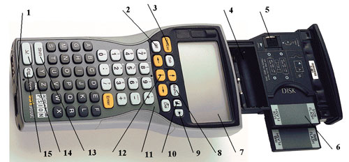
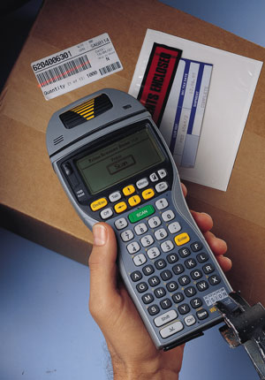
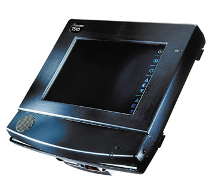
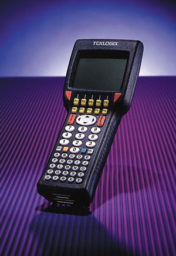
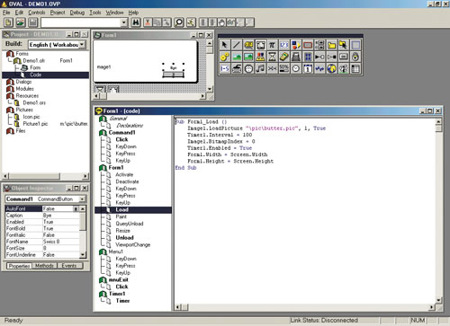
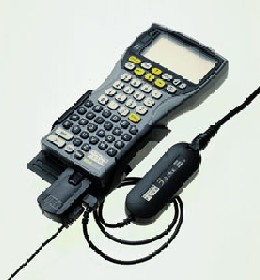
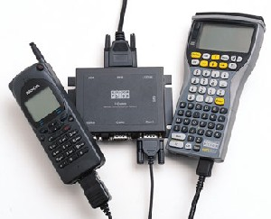

losik@bytemag.ru
История индустриальных терминалов Psion - это в известной мере история становления компании. Появление марки Psion на рынке, как известно, было связано с созданием первого в мире суперпортативного ПК Psion Organiser (1984 г.), который представлял собой не столько машину типа "цифровой секретарь" (категория изделий, с которыми ныне ассоциируется марка Psion), сколько по сути индустриальный терминал. Эта модель (с 2 Кбайт памяти, гнездами для плат памяти SSD, процессором x86 с тактовой частотой 0,92 МГц, экраном на 16 знакомест, размером 142x78x29,3 мм и массой 225 г) создавалась прежде всего как персональное устройство накопления и обработки информации, функции органайзера были в ней не то чтобы дополнительными, но не основными. Основу пакета прикладных программ Psion Organiser составляли БД и среда программирования OPL (Organiser Programming Language).
Изначально Psion (http://www.psion.com) ориентировалась на ученых и инженеров - как утверждает легенда, фирму предполагалось назвать PSI - сокращение от Potter Scientific Instruments, "Научные приборы Поттера" (по имени основателя, английского профессора Дэвида Поттера). Однако поскольку такая компания к моменту регистрации Psion уже существовала, то к названию добавлен суффикс on. И первая ее машина несколько неожиданно для создателей стала популярна среди пользователей, с наукой никак не связанных, - владельцев магазинов и торговых сетей, оптовых компаний, страховых агентов и проч. и проч. Они использовали эту модель как портативный терминал сбора данных - роль, которую индустриальные терминалы Psion успешно играют и сегодня.
В 1993 г. компания Psion приняла решение о разделении модельного ряда на потребительские машины (Psion Series 3 во множестве ее инкарнаций, Psion Siena, Psion Series 5/5mx, Psion Revo и проч.) и индустриальные. Причины понятны - к потребительским и индустриальным машинам предъявляются совсем разные требования: первые должны быть функциональными и по возможности стильными, вторые - надежными и гибкими. После нескольких промежуточных моделей Psion создала серию WorkAbout (1996 г.), а в прошлом году, приобретя компанию Teklogix, пополнила семейство индустриальных терминалов машинами Teklogix, среди которых есть модели как на базе DOS/Windows, так и собственной фирменной ОС Teklogix.
Концепции
Основная концепция, в соответствии с которой конструировались индустриальные терминалы вообще и Psion в частности, - надежность. Терминалы могут работать в широком диапазоне температур и при высокой влажности, переносить удары и падения. При этом Psion не изготавливает бесклавиатурных машин - практика показывает, что клавиатурные модели прочнее, а научить персонал предприятия нажимать на клавиши на порядок проще, нежели вводить информацию с помощью сенсорного экрана, даже если на этом экране изображается виртуальная клавиатура (тем не менее у бесклавиатурных систем есть свои преимущества - и Psion некоторое время назад продемонстрировала прототип бесклавиатурного терминала Psion NetPad, который появится на рынке в июле 2001 г.).
Как правило (исключая несколько планшетных машин и модели, подобные Psion Netbook), индустриальные терминалы имеют корпус, вытянутый по вертикали, существуют модели с алфавитно-цифровой и только с цифровой клавиатурой, с разными по размеру экранами, объемом ОЗУ и т.д. Типичный сценарий их использования предусматривает ввод данных в терминал с помощью клавиатуры либо сканеров штрих-кодов и синхронизацию (в начале или конце рабочего дня) с информационной системой предприятия. В рамках этой процедуры данные передаются в систему автоматизации, и (в зависимости от особенностей корпоративной информационной системы) на терминал переносится какая-то информация. В моделях, имеющих средства подключения к радиосетям, последний этап может выполняться сразу после ввода информации.
С точки зрения ОС "изюминка" индустриальных PDA заключается в том, что в них нередко применяются далеко не самые современные версии ОС - поскольку корпоративные пользователи, как правило, могут пожертвовать функциональностью в пользу простоты и надежности. Например, в моделях семейства WorkAbout применялась ОС EPOC16, некоторые машины работают под управлением компактной и недорогой DOS.
Модели
Суперпортативные ПК Psion WorkAbout представляют собой индустриальные терминалы на базе платформы Psion SIBO.Первые их модели появились в середине 1993 г. и по сути представляли собой Psion Series 3 в индустриальном корпусе. Эти системы основаны на процесорах семейства x86, оснащались 256 Кбайт ОЗУ, экраном 240x160, последовательными и инфракрасными портами, имели габариты 150x73x19 мм и массу 183 г. Время автономной работы от аккумулятора составляло 40-60 ч. Для Psion WorkAbout предлагаются мощные средства разработки, от языков программирования C и C++ до средств визуального программирования (RAD OVAL), совместимых с языком Visual Basic, которые позволяют быстро создавать или изменять прикладное ПО.
В семействе индустриальных терминалов Psion сегодня насчитывается двадцать моделей: десять в серии WorkAbout (это mx Scanner, RFID, mx, mx Wand и другие, отличающиеся вариантами и комбинациями дополнительных портов расширения) и десять - радиотерминалы Teklogix. Последние - это пять моделей ручных терминалов в сериях 70хx и 75хх (7035 Hand-held Computer, 7030 Hand-held Terminal, 7030 Hand-held Terminal-Freezer, 7040, 7520), модели мобильных терминалов серий 8055, 8060, 8510, 8260, 8255. Существует еще модель Psion Netbook, которая обсуждается в статье "Psion Netbook - терминал для клерка" в этом номере. Существует некоторое количество комплектов для монтажа в автомобиле, однако мы их не рассматриваем, в основном потому, что по сути они представляют собой обычные терминалы, в комплект поставки которых входят специальные стойки, позволяющие работать с терминалами в машине. Кроме того, мы не рассматриваем модели, которые были разработаны до модели WorkAbout mx, - функционально они аналогичны ей, только имеют менее мощные процесоры и меньший объем ОЗУ. При этом модели первого поколения и сегодня пользуются спросом, поскольку это вполне приемлемый вариант для автоматизации небольшого склада - 256 Кбайт ОЗУ, как показывает практика, оказывается вполне достаточно для проведения инвентаризации на складе при ассортименте 3-5 тыс. наименований.
WorkAbout mx
В известной мере это базовое изделие серии WorkAbout mx. Остальные модели с точки зрения конструкции представляют собой WorkAbout mx, оснащенный какими-либо дополнительными функциями (сканер в случае моделей WorkAbout mx Wand и WorkAbout mx Scanner или разные комбинации дополнительных портов расширения, как в модели WorkAbout mx RS232/TTL/IrDA).
Эта модель разрабатывалась как терминал для накопления данных, предназначенный для использования на складах, в разъездной оптовой торговле (Van Selling) и в других случаях, где предполагается хранение достаточно значительных объемов данных и иногда весьма сложная их обработка (скажем, контроль информации, которую вводит экспедитор, с поиском по базе данных).
Модель WorkAbout mx имеет прочный корпус, с защитным стеклом над экраном и усиленными гнездами последовательного порта (low insertion force port, LIF-PFS). Объем памяти в минимальной конфигурации составляет 2 Мбайт; ее можно расширить с помощью двух плат памяти SSD по 8 Мбайт. В ней применяется процессор NEC V30MX (клон 80C86) с тактовой частотой 27,6 МГц, ЖК-экран (77 мм по диагонали, 240x100, разрешение в текстовом режиме - 39x12 символов, 4 градации серого), клавиатура (35 клавиш в модели только с цифровой клавиатурой, 57 - с полной), "пьезодинамик". Несмотря на сравнительно маломощный процессор, с производительностью проблем не возникает - машина работает под управлением исключительно эффективной ОС EPOC16 (см. раздел "EPOC16 как индустриальная ОС"). В ПЗУ (2 Мбайт) машины записываются ОС, библиотеки среды программирования OVAL, системная оболочка, СУБД, электронная таблица, калькулятор и проч. Коммуникационный пакет PsiWin позволяет преобразовывать в процессе синхронизации файлы WorkAbout и ПК (Excel 4.0/5.0/7.0, Works for Windows 3.0, Quattro Pro 5.0, Lotus 1-2-3, ACT! 2.0, dBase III & IV, Polaris PackRat 5.2, Lotus Organizer 1.0, 1.1, 2.1, текст с разделителями) и несколько прикладных программ. В качестве плат памяти используются фирменные картриджи SSD (Solid State Disk), пользователи могут работать с платами ППЗУ или ОЗУ, для которых предусматривается два гнезда на корпусе. Для питания терминала используются две батареи AA или аккумуляторы, которые при необходимости можно подзаряжать в специальной док-станции, не вынимая их из терминала. Габариты устройства 189x92x35 мм, масса 325 г, работает при температуре от -20-до +60°C, влажности до 95%.
|  |
| Psion WorkAbout mx. 1 -- разъем (LIF) для подключения терминала к периферийным устройствам; 2 -- клавиша "Выключить"; 3 -- клавиша "Включить" и "Esc"; 4 -- гнездо для батарей основного питания или аккумуляторов; 5 -- гнездо для подпитывающей батареи; 6 -- два разъема для плат SSD; 7 -- экран; 8 -- кавиша "Меню"; 9 --клавиша включения/выключения подсветки; 10 -- клавиша изменения контрастности изображения; 11 -- индикатор включения внешнего питания; 12 -- клавиши перемещения курсора (вверх, вниз, влево, вправо); 13 -- клавиша Shift; 14 -- клавиша Psion; 15 -- Клавиша Ctrl. |
WorkAbout MX Scanner/ WorkAbout MX Wand
Эти модели - комбинация терминала Workabout mx и сканера штрих-кодов (двух разновидностей) - предназначены для розничных и оптовых магазинов, складов и проч. Сканеры, которые применяются в этих моделях, позволяют считывать информацию на расстоянии до 91,5 см (предусматриваются варианты сканеров с изменяемым и фиксированным углами сканирования, а также "дальнобойные", способные работать на расстоянии до 253 см). Терминал обеспечивает12 ч непрерывной работы в режиме постоянного сканирования, 60 ч - в режиме терминала. В ОС предусматривается подсистема обработки штрих-кодов, разработчики предприятия могут интегрировать терминал в информационные системы. Разработка программ для WorkAbout - задача вполне тривиальная, поскольку инструментальные пакеты совместимы с библиотеками обработки штрих-кодов. Сканеры в "сканерных" моделях WorkAbout обеспечивают работу со стандартами EAN 8/13, UPC A/E, Codabar, Code 39 standard/Extended, Interleaved 2of5, Code 128, Code 93, MSI, USS-128, UCC/EAN 128, ISTB-128. Скорость составляет до 36 операций/с.
|  | Psion WorkAbout MX Wand. Сканирование штрих-кода.
|
Workabout RFID
В этой модели реализованы средства работы с "радиоидентификационными метками" (RFID) - это перспективный (правда, пока относительно мало распространенный в России) метод идентификации, который по сути позволяет решать те же задачи, что и штрих-код, однако быстрее, надежнее и проще.
7510
Семейство машин Teklogix, в которое входит модель 7510, досталось Psion после покупки компании Teklogix. Основная особенность этих моделей - развитые средства связи по радиосетям. Эти терминалы могут показаться несколько менее функциональными, нежели модели WorkAbout, однако тут нельзя забывать, что они предназначаются для иного сегмента - автоматизации очень крупных предприятий, которым необходимо контролировать информацию с огромных складов и магазинов в реальном времени и оперативно передавать ее в систему управления предприятием, подобную SAP R/3. Для терминалов Teklogix, а ныне Psion Teklogix, разработана весьма развитая сетевая инфраструктура (подробнее см. раздел "Аксессуары для индустриальных терминалов").
Модель 7510 - это планшетный индустриальный ПК. Машина основана на Windows 95 - по сути это бесклавиатурный портативный ПК в защищенном корпусе с сенсорным экраном. Предусматривается цветная и черно-белая модель, в цветной используется процессор AMD 586 DX5/133, в черно-белой - 486DX4/100, в машине применяется шина ISA, имеется 2 Мбайт ППЗУ, из которого 1,44 Мбайт доступно пользователю, и 32 Мбайт ОЗУ. У обеих моделей разрешение экрана составляет 640x480 (157 мм по диагонали), разрешение дигитайзера - 340x460 точка/дюйм. Пользователю доступны два разъема PCMCIA Type II (для плат подключения к сети, Ethernet или радио, один - внутренний и один - внешний, защищены влагопылезащитной крышкой), гнездо PCMCIA Type III, куда можно подключать жесткий диск (в разъеме обеспечивается интерфейс IDE) или плату твердотельной памяти. Имеется многофункциональный разъем, к которому можно подключать блок питания, последовательный или параллельный кабель (применяется для подключения ПК к док-станции), инфракрасный порт. Объем внутреннего жесткого диска составляет 340 Мбайт, дисковую память можно расширять до 1 Гбайт.
|  | Индустриальный терминал Teklogix 7510.
|
В машине предусмотрен динамик, звуковая плата, микрофон и разъем для подключения наушников. Габариты составляют 194,5x186,9x100,4 мм при массе 1,16 кг (без батарей). Для питания устройства используется литий-ионная батарея (емкостью 2000 мАч, 248 г), продолжительность работы от батареи составляет 3-8 ч, в зависимости от интенсивности; предусматривается подпитывающая батарея (основные батареи можно заменять в "горячем" режиме, предварительно переведя машину в режим "сон").
7030
Модель представляет собой терминал сбора данных для крупных предприятий. Машина основана на RISC-процессоре, работает под управлением фирменной ОС, предусматривается 2 Мбайт ППЗУ, 512 Кбайт ОЗУ, два коммуникационных разъема (28- и 36-контактные, к ним подключаются сканеры и прочие последовательные устройства), клавиатура (три варианта, с разным количеством цифровых и функциональных клавиш), ЖК-экран с разрешением 320x200 пикселов ("горизонтальный"), несколько факультативных устройств для подключения к радиосетям и сканеров. Габариты устройства - 265x74x38 мм, масса 1 кг (с батареями и адаптером для подключения к сети), работает от аккумулятора (1200 мАч) до 8 ч. Функционирует в диапазоне температур - от 0 до 50° C, "морозоустойчивая" модель - от -30 до 50° C (предназначается для холодильных складов), выдерживает влажность до 96%.
|  | Индустриальный терминал Teklogix 7030.
|
7035
Модель 7035 внешне похожа на модели серии WorkAbout, но основана она на DOS. Она представляет собой классический индустриальный терминал, в котором используется процессор AMD Elan SC400 (промышленная модель на базе ядра процессора 486DX/33), имеется 4 Мбайт ППЗУ (расширяется до 8 Мбайт), 8 Мбайт ОЗУ. Машина работает под управлением IBM-DOS 7.0. Предусматривается клавиатура, причем существует несколько вариантов - с крупными клавишами (big button, 36 клавиш), "многофункциональная" (multi-purpose, 44 клавиши) и "полная" (full alpha numeric, 56 клавиш); в зависимости от модели может быть до 36 функциональных клавиш и до 10 - программируемых пользователем. Экран устройства имеет размеры 62x62 мм, разрешение 160x160 пикселов в графическом режиме (экран черно-белый), в текстовом режиме предусматривается возможность отображения текста шрифтами разных размеров (5x10, 6x10, 8x10, 18x20, 18x26, 18x32, 9x20, 10x20, 10x26). Имеется два последовательных порта (RS-232, в COM1 есть микросхема 16550 UART), инфракрасный порт, несколько факультативных устройств для радиосвязи (802.11b, передатчик для связи в диапазоне 403-512 МГц и адаптер для подключения к сети Mobitex Wireless Data Network, 400 МГц в Европе или 900 МГц в США). Габаритные размеры составляют 93x74x241 (клавиатура - 69x41мм),масса - 650 г (с батареей и адаптером для сетей 802.11b, сканер штрих-кодов добавляет еще 48 г).
Машина ориентирована на использование в весьма жестких условиях (правда, менее жестких, нежели модели серии WorkAbout). Модель для "обычных" температур может работать при температурах 0-50° C, "морозоустойчивая" - от -20 до 50° C, машины выдерживают влажность до 90%, падение с высоты 1,5 м и т.п. Источник питания - батарея (в комплект входит батарея на 1500 мАч); продолжительность работы от аккумулятора составляет 8 ч.
7520
Терминал, который в известном смысле конкурирует с машинами серии WorkAbout. Если предыдущие машины по сути были ориентированы на конкретные сегменты и представляли собой относительно специализированные системы, то 7025 - многофункциональная платформа. До ее появления тиражируемые в некотором смысле системы автоматизации на базе индустриальных терминалов можно было создавать только на машинах семейства WorkAbout: поскольку в модели 7035 используется DOS с фирменными расширениями, а в 7030 - фирменная ОС, это предполагает разработку специализированных компонентов для интеграции терминалов в конкретную ИС. Однако 7025 предоставляет практически такие же возможности, что и WorkAbout, поскольку основана на платформе Windows CE.
В этой модели применяется ЦП StrongArm SA 1100/190 МГц (в рамках этой машины вычислительная мощность примерно сопоставима с Pentium-200), 8 Мбайт ППЗУ, 16 Мбайт ОЗУ, работает под управлением Windows CE 2.12/3.01, имеются сенсорный ЖК-экран (320x240, существуют модели с "портретным" и "ландшафтным" дисплеями), алфавитно-цифровая клавиатура (54 клавиши, цифровые клавиши размещены на отдельном блоке), гнездо PCMCIA Type III (при использовании интегрированного сканера - PCMCIA Type II), пользователь может инсталлировать адаптер для подключения к радиосети. Габариты машины - 104x60x268 мм, масса 840 г (с батареями), она работает в диапазоне температур от -30 до 50° C.
EPOC16 как индустриальная ОС
Платформа EPOC16 была создана достаточно давно, официальное объявление ее датируется 1991 г., когда компания Psion попыталась создать PDA-ноутбуки серии Psion MC. На сегодня это исключительно надежная и стабильная ОС, за годы эксплуатации "вылизанная" даже в мелочах. Строго говоря, полное название платформы - SIBO - расшифровывается как SIxteen Bit Organiser, это полномасштабная архитектура для суперпортативных устройств на базе процессоров x86, в рамках которой EPOC16 играла роль ОС. Платформа была разработана специально для портативных систем, питающихся от батарей, компактных и производительных. В SIBO был реализован исключительно эффективный механизм вытесняющей многозадачности (и многопотоковость), пользователи могли запустить несколько десятков программ и, работая в одной, просто забыть об остальных. Предусматриваются аппаратная защита адресного пространства ОС и процессов друг от друга, мощные средства управления питанием, коммуникационные протоколы, ввод-вывод (на базе дисков SSD), часы реального времени. Эти преимущество закономерно унаследовали и индустриальные терминалы на базе EPOC16, благо что первые модели представляли собой Psion Series 3 в промышленном корпусе.
В EPOC16 предусматривается совместимая с DOS файловая система, ОС предоставляет стандартный API (для программ на C и C++) файлового ввода-вывода, средства для работы с графикой и полный комплект элементов управления, от диалогов и окон до меню и экранных кнопок.
OVAL - Visual Basic для индустриальных терминалов
Средства разработки - это исключительно важный аспект для пользователей индустриальных терминалов. Как бы гибка ни была прикладная программа, предназначенная для работы с ними, рано или поздно наступает момент, когда приходится "дорабатывать систему напильником". Для EPOC16 существует несколько инструментальных пакетов, среди которых есть как компилятор C, так и фирменное средство быстрой разработки, основанное на фирменном же языке программирования OPL - OVAL (Object-based Visual Applications Language).
Этот пакет - классическая среда "визуальной разработки", которая позволяет весьма просто "подогнать" ПО терминала к требованиям предприятия. Кроме того, предусматривается возможность импорта исходных текстов на базе Microsoft Visual Basic. Для работы программы, созданной с помощью OVAL, необходима библиотека функций (аналогично работе программ, подготовленных с помощью Visual Basic), которая записывается в ПЗУ всех моделей индустриальных терминалов Psion WorkAbout. Пакет включает полноценную среду разработки, в процессе создания программы разработчик "рисует" диалоговые окна, задает подпрограммы обработки элементов управления (предусматриваются "подсветка" синтаксических конструкций, система "помощи" по языковым конструкциям, причем с указанием особенностей работы на конкретных моделях и т.д.), для отладки используется целевое устройство, подключенное к последовательному порту (отладка происходит на ПК). Пакет совместим с Windows 3.x и Windows 95/98/ME/NT/2000.
|  |
| Среда разработки OVAL.
|
<h4>Примеры программ на OVAL </h4><b>Файл DEMO1.OFR</b>
OVAL Form File Version 100
Control Form Form1
{
Properties
{
ForeColor = 0
HelpContext = 1
Top = 0
Left = 0
Width = 240
Height = 100
BorderShadow = 0
Caption = ""
BackColor = 16777215
FillColor = 0
HorizontalAlign = 0
VerticalAlign = 0
}
Procedure Load
{
Sub Form1_Load ()
Image1.LoadPicture "\pic\butter.pic", 1, True
Timer1.Interval = 100
Image1.BitmapIndex = 0
Timer1.Enabled = True
Form1.Width = Screen.Width
Form1.Height = Screen.Height
End Sub
}
Procedure Unload
{
Sub Form1_Unload (Cancel As Integer)
Beep
End Sub
}
Control Menu Menu1
{
Properties
{
Card = 0
Item = 0
}
Control MenuCard mnuHello
{
Properties
{
Caption = "Butterfly"
}
Control MenuItem mnuExit
{
Properties
{
}
Procedure Click
{
Sub mnuExit_Click ()
End
End Sub
}
}
}
}
Control Timer Timer1
{
Properties
{
Enabled = 0
}
Procedure Timer
{
Sub Timer1_Timer ()
Image1.Top = Image1.Top - 2
Image1.Left = Image1.Left + 3
If (Image1.Top < 0) Then
Image1.Top = Screen.Height
End If
If (Image1.Left > Screen.Width) Then
Image1.Left = 0
End If
If (Image1.BitmapIndex = 0) Then
Image1.BitmapIndex = 2
Else
Image1.BitmapIndex = 0
End If
End Sub
}
}
Control Image Image1
{
Properties
{
Top = 45
Left = 10
Width = 30
Height = 30
BorderShadow = 2
BorderStyling = 0
BorderRound = 0
DrawMode = 2
}
}
Control CommandButton Command1
{
Properties
{
Top = 55
Left = 160
FontName = "Swiss 8"
FontSize = 8
FontBold = 30
Caption = "Bye"
Hotkey = 33
}
Procedure Click
{
Sub Command1_Click ()
Beep
Unload Me
End Sub
}
}
}
<b>Файл DEMO1.ORS</b>
OVAL RESOURCE FILE Version 100
STRINGS SECTION
RESOURCE IDS
BEGIN
"OVAL_ERROR1"
"OVAL_ERROR2"
"IDS_RESOURCE"
END
RESOURCE TEXTS
BUILD
0
KEYMAP
0
257
256
260
261
9
13
27
0
0
8
8
0
0
0
BEGIN
"Cannot find runtime"
"Cannot Load Splash"
""
END
ENDSTRINGS
HELP SECTION
BUILD
0
STARTING HELP
-1
HELP TOPIC
"Demo1"
HELP SYSTEM
0
HELP ID
0
HELP WIDTH
250
HELP TEXT
""
RELATED TOPICS
BEGIN
15
END
HELP TOPIC
"Butterfly"
HELP SYSTEM
0
HELP ID
0
HELP WIDTH
250
HELP TEXT
"Example OVAL program"
RELATED TOPICS
BEGIN
END
ENDHELPS
DEMO1.OVP
Version 1.00
Begin Builds
Build English ( Workabout )
End
Begin Components
*DEMO1.OFR
Begin Picture
Icon.pic 0
End
Begin Picture
PICTURE1.PIC m:\pic\butter.pic
BUT1.BMP 1
BUT2.BMP 1
End
<b>Файл Demo1.ORS</b>
End
Begin Builds
Build English ( Workabout )
Bitmap Picture1.pic
Bitmap Icon.pic
Module Demo1.ofr
End
Begin Application
DEFAULTPATH \movSHELLNAME Demo
DEFAULTEXT mov
USEFILE DEMO1.MOV
RUNICON Demo
ALAISEXT mov
HASFILES 0
ONEFILE 0
RUNNEW 0
NOALIAS 1
RUNMODE 0
IPCSERVER 0
OPTIONEXPLICIT 1
WAITSTUB 0
DEBUG 1
STACKSIZE 2048
TARGET 0
DEFAULTPSIONDRIVE M
BUILD English ( Workabout )
End
|
Индустриальное ПО
Как нетрудно догадаться, индустриальные терминалы обретают смысл существования только в корпоративной информационной системе. Типичный сценарий их использования предполагает накопление и передачу информации между терминалами и корпоративной БД в рамках процедуры синхронизации. При этом терминалы Psion играют роль не столько пассивных "накопителей", что свойственно изделиям на базе иных платформ, а вполне активного компонента - например, когда пользователь вводит информацию в терминал, она проверяется на корректность (скажем, невозможно продать клиенту больше товара, нежели имеется в данный момент на складе, или предоставить ему скидку, превышающую ту, на которую дает право сумма текущей покупки; при этом не исключено, что можно проверить кредитную историю клиента и все-таки зафиксировать сделку). На сегодня имеется несколько прикладных пакетов, причем как вполне самостоятельных разработок, так и предназначенных для интеграции терминалов в торговые системы на базе популярных пакетов, таких, как "1С:Предприятие" или SAP R/3 (последнее менее актуально для российского рынка в целом, однако, может быть исключительно важно для отдельных компаний).
Пакет "Инвентаризация" 3.0 предназначен для инвентарного учета товаров на складе, в магазине или офисе, имеет русский интерфейс, максимальный объем БД составляет 60 тыс. наименований, предусматриваются средства связи с ПК (в формате CSV - текстовый файл с полями, разделенными запятой). Разработан компанией Galaxy Computers (http://www.psion.aha.ru).
Пакет Stock Control 2.0 предназначен для проведения инвентарного учета товаров на складе с помощью портативного терминала Psion WorkAbout mx Scanner, оснащен системой поиска товаров по штрих-коду. Разработан компанией Galaxy Computers.
Пакет "Приход товара" предназначен для быстрого оприходования товара от поставщика на складе или в магазине. Предусматривается ввод новых товаров, клиентов, цен и количества с терминала, печать накладных. Разработан компанией Galaxy Computers.
Пакет M-Trade v 3.2 предназначен для автоматизации оптовой торговли с автомобилей (Van Selling). Предусмотрены средства учета движения товара вне офиса, создание и печать необходимых документов, синхронизация входных и выходных данных с информационной системой предприятия. Разработан компанией Galaxy Computers.
Пакет "1С-Раpус:Терминал сбора данных" предназначен для интеграции индустриальных терминалов с программами семейства "1С:Предприятие". Представляет собой компонент "1С:Предприятие", комплект "конфигураций" для разработчиков (набор метаданных, необходимых для считывания информации с терминалов). В комплект поставки, помимо конфигураций и драйверов, входят программы для терминалов. Разработан компанией "1С-Рарус" (http://www.rarus.ru).
"ОмниЛинк" предназначен для автоматизации процедуры передачи информации с индустриальных терминалов (не только Psion Teklogix). Среди пользователей пакета - "НТВ-Плюс", филиалы ГУМа, транспортная компания "Олсвег", магазины TJ Collection, ТИАС, компания SofTronik, магазины Colin Jeans. При наличии радиотерминала данные передаются по мере их накопления. Разработан компанией "Пилот" (http://www.pilot.ru).
Пакет VSOP предназначен для автоматизации торговой деятельности вне офиса (на украинском языке). Разработан компанией "Джерела Украины" (http://www.vcs.kiev.ua).
Типовое решение (конфигурация) "Астор: Торговый Дом 4.0" на базе пакета "1С:Предприятие 7.7" предназначено для автоматизации средних и крупных магазинов, супермаркетов, групп компаний и холдингов, ведущих оптовую, розничную или оптово-розничную торговлю. Имеется интегрированная система взаимодействия с бухгалтерией (реализовано несколько систем - оптовая, розничная, оптово-розничная, рознично-оптовая), контроль товаров, тары, услуг, наборов и собственной продукции. Услуги могут относиться на увеличение себестоимости или на издержки обращения (задается для каждого договора в отдельности). В конфигурации реализована возможность прихода товара от иностранного поставщика (ГТД) с учетом любых услуг, связанных с доставкой груза. Разработан компанией "Астор ВЦ".
Аксессуары
Коммуникационный адаптер предназначается для подключения индустриальных терминалов серии Psion WorkAbout к ПК, модемам, принтерам и проч. с помощью специального последовательного или параллельного кабеля. Предусматриваются возможности питания устройства с помощью адаптера.
|  |  |
| Коммуникационные аксессуары для Psion WorkAbout.
| |
Базовая станция упрощает подключение индустриальных терминалов к ПК и т.п. На заднем торце базовой станции размещается сменный адаптер для подключения терминалов (RS232, параллельный, MSR, BCR). Базовая станция обеспечивает постоянное питание и подзарядку (среднее время подзарядки аккумуляторов - 90 мин) основных и дополнительных аккумуляторов от сети питания.
Многосекционная базовая станция представляет собой несколько базовых станций, соединенных в одно целое. Одновременно можно использовать для подключения до четырех терминалов, причем предусматривается возможность подключения к одному последовательному порту ПК.
Сканеры. К индустриальным терминалам можно подключать множество разных сканеров штрих-кодов. Это отдельная и исключительно обширная тема, которую мы здесь затрагивать не будем.
Считыватели электронных меток позволяют накапливать информацию с идентификаторов в виде металлических "таблеток" (микросхема памяти в металлическом контейнере, защищенная от воды, коррозии, ударов). Используются для маркировки контейнеров, парка автомобилей, катеров, таксофонов, товаров и продукции и проч.
Картриджи памяти (SSD) предназначаются для расширения памяти терминалов, например, для загрузки больших БД, которые невозможно разместить в стандартной памяти объемом 2 Мбайт. Существуют платы на базе флэш-ППЗУ и ОЗУ (последние энергозависимы), емкость плат составляет 128-2048 Кбайт, файловая система совместима с FAT. Платы защищены от механических повреждений, информация сохраняется даже после того, как картридж "утонул" и пробыл в воде в течение 1 ч (правда, при этом память превращается из ППЗУ в ПЗУ).
Считыватель SSD - адаптер для ПК, который позволяет работать с картриджами памяти в среде Windows 3.x/95 или MS-DOS 3.xx/6.xx, как с обычными накопителями. Предусматривается два гнезда для картриджей, скорость считывания для плат ППЗУ составляет 60 Кбайт/с, записи - от 6 до 9 Кбайт/с, для плат ОЗУ скорость считывания и записи - 60 Кбайт/с.
Зарядное устройство для моделей семейства WorkAbout предназначается для подзарядки аккумуляторов, оснащается индикаторами, которые позволяют контролировать процесс зарядки. Предусматривается режим "быстрой зарядки", когда полностью разрядившиеся аккумуляторы восстанавливаются примерно за 1 ч (вместо полутора). Выпускается в виде портативного адаптера и "станции".
Адаптер для монтажа терминала на приборной панели автомобиля. Это изделие позволяет закрепить терминал на приборной панели и подключить его к автомобильной сети питания. Предусматриваются последовательный 15-контактный специальный порт и два последовательных 9-контактных разъема. Последовательные порты с 15-контактными разъемами обеспечивают ту же функциональность, что и 9-контактные, плюс средства для управления терминалом.
Многофункциональный концентратор и небольшое устройство, позволяющее создавать в автомобиле "минисеть", к которой подключаются терминал, принтеры, сканеры адаптеров GPS, модемы и проч. Физически представляет собой небольшой картридж с последовательными и иными портами (всего до трех), в корпусе могут размешаться интегрированные устройства, подобные приемнику GPS или адаптеру для считывания информации с датчиков автомобиля (спидометр, датчики расхода бензина и масла и т.п.).
Контроллеры радиосети серии 9400 предназначены для подключения радиотерминалов к корпоративной сети. Изделие позволяет подключаться практически к любой сети по любому протоколу: к мэйнфреймам, машинам семейства IBM AS/400 и серверам на базе Windows NT/2000 и UNIX (по протоколам SNA/SDLC, SNA/LU6.2, TCP/IP). Для управления контроллером используется протокол SNMP.
Шлюз для развертывания радиосетей 9150 предназначается для сетей, которые одновременно должны предоставлять возможность передавать данные на большие расстояния и обеспечивать высокоскоростную передачу (это комбинация сети 802.11b 2,4 ГГц и 902 МГц).
| Модель | Psion WorkAbout mx | Psion WorkAbout mx Scanner/ Psion WorkAbout mx Wand |
Psion WorkAbout mx RFID | |
| Процессор | NEC V30MX | NEC V30MX | NEC V30MX | |
| ОС | EPOC16 | EPOC16 | EPOC16 | |
| ОЗУ, Мбайт | 2 | 2 | 2 | |
| ПЗУ, Мбайт (тип) | 2 (ПЗУ) | 2 (ПЗУ) | 2 (ПЗУ) | |
| Экран (тип/разрешение, пиксел) | ЖК/240x100 | ЖК/240x100 | ЖК/240x100 | |
| Разъемы расширения | 2xSSD | 2xSSD | 2xSSD | |
| Коммуникации | Последова-тельный, инфракрасный (2) порты | Последова-тельный, инфракрасный (2) порты | Последова-тельный, инфракрасный (2) порты | |
| Радиосвязь | Нет | Нет | Нет | |
| Сканер | Нет | Да | Да (средства работы с тегами RFID) | |
| Клавиатура (число клавиш) | 35-57 | 35-57 | 35-57 | |
| Источник питания | 2 x AA | 2 x AA | 2 x AA | |
| Габариты, мм | 189x92x35 | 189x92x35 | 223x92x35 | |
| Масса, г | 325 | 325 | 263-372 | |
| Диапазон рабочих температур, oC | -20-60 | -20-60 | -20-55 | |
| Допустимая влажность, % | 90 | 90 | 90 | |
| Модель | 7510 | 7035 | 7030 | 7520 |
| Процессор | 586 DX5/133 (486 DX4-100) | AMD Elan SC400 | н/д | StrongArm SA 1100/190 |
| ОС | Windows 95 | IBM-DOS 7.0 | н/д | Windows CE 2.12/3.01 |
| ОЗУ, Мбайт | 32 | 8 | 0,5 | 16 |
| ПЗУ, Мбайт (тип) | 2 (ППЗУ) | 4 (ППЗУ) | 2 (ППЗУ) | 8 (ППЗУ) |
| Экран (тип/разрешение, пиксел) | 640x480 | 160x160 | 320x200 | 320x240 |
| Разъемы расширения | 2 x PCMCIA Type II, 1 x PCMCIA Type III | Гнездо для радио-модема | Гнездо для радио-модема | PCMCIA Type III, гнездо для радио-модема |
| Коммуникации | Многофункци-ональный разъем, инфра-красный, разъем для жесткого диска | 2 последова-тельных, многофункци-ональный, инфра-красный порты | 2 последова-тельных порта (28- и 36-контактный) | Последова-тельный порт (до 230,4 Кбит/с), инфра-красный (до 4 Мбит/с) |
| Радиосвязь | 2,4 ГГц | 2,4 ГГц; 403МГц | 403 МГц; 902 МГц | 2,4 ГГц |
| Сканер | Факульта-тивно | Факульта-тивно | Факульта-тивно | Факульта-тивно |
| Клавиатура (число клавиш) | Нет | 36-56 | 40-57 | 54 |
| Источник питания | Гидридно-никелевый аккум. | Литий-ионный аккум. | Литий-ионный аккум. | Литий-ионный аккум. |
| Габариты, мм | 194,5x186,9x100,4 | 93x74x241 | 265x74x38 | 104x60x268 |
| Масса, г | 1160 | 650 | 1000 | 840 |
| Диапазон рабочих температур, oC | 0-30 | 0-50 (-20-50) | 0-50 (-30-50) | -30-50 |
| Допустимая влажность, % | 90 | 90 | 96 | 96 |
| н/д - информация отсутствует. | ||||
Проекты на базе индустриальных терминалов Psion в РоссииРоссийское представительство "Марс"Первая в России система мобильной торговли (Van Selling) на базе портативных терминалов WorkAbout. Реализован компанией Galaxy Computers. Российские представительства компаний "Колгейт-Палмолив", "Нестле", "Юнилевер"Система мобильной торговли (Van Selling) на базе портативных терминалов WorkAbout. Реализован компанией Galaxy Computers. Государственный комитет по статистике Российской ФедерацииАвтоматизированная система сбора и обработки информации по ценам и услугам. Реализован компанией Galaxy Computers (она была выбрана по итогам двух закрытых тендеров - на поставку оборудования и разработку ПО), проведенных Госкомстатом РФ. В проекте Госкомстата используется более 400 индустриальных терминалов Psion WorkAbout mx и периферийное коммуникационное оборудование, разработана и развернута система автоматизации. "Фольксваген Групп"Система автоматизации оптовой торговли продажи запасных частей для дилеров концерна Volkswagen. Участники проекта: "1С-Рарус" (Москва, Россия), Volkswagen (Кассель, Германия), Skoda-Auto (Млад Болеслав, Чехия). Интеграция информационной системы и терминалов Psion WorkAbout с помощью пакета "1С-Рарус: Терминал сбора данных". Российское представительство "Эрман"Система автоматизации склада готовой продукции на базе радиотерминалов Psion-Teklogix. Реализован компанией Galaxy Computers. |